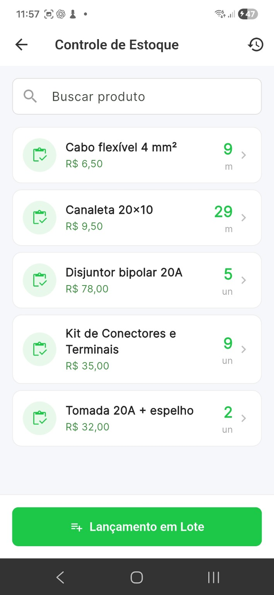
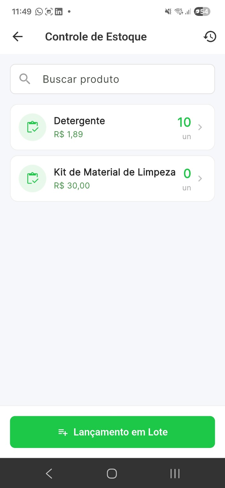
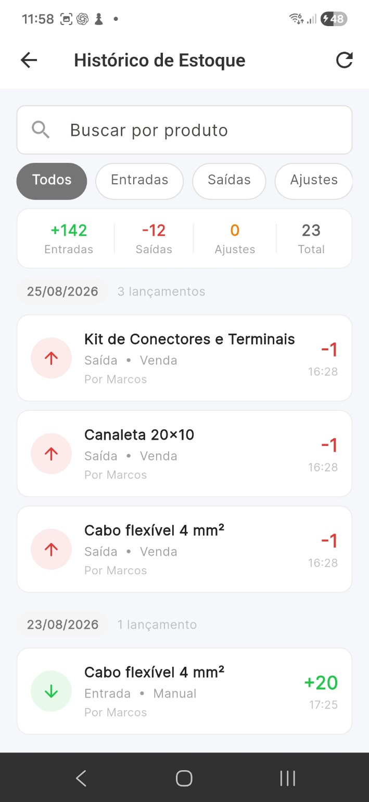

Para prestadores
Organize materiais e peças usados nos atendimentos e serviços.
Cadastre produtos, materiais e peças, acompanhe o saldo disponível e consulte o histórico das movimentações direto pelo celular.


Tenha uma visão simples dos itens cadastrados e consulte rapidamente o estoque disponível pelo celular.
Consulte o histórico para acompanhar o que entrou, o que saiu e os ajustes feitos no estoque.

Organize materiais e peças usados nos atendimentos e serviços.
Tenha controle sem precisar montar planilhas ou sistemas complexos.
Centralize estoque, vendas, clientes e relatórios em um só lugar.
Sim. O estoque pode ser usado para organizar os itens cadastrados no seu negócio, incluindo produtos, materiais e peças.
Sim. O Valeu possui histórico de estoque para acompanhar alterações e movimentações dos itens.
Não. A proposta é concentrar o controle operacional no Valeu, direto pelo celular.
Organize materiais, peças e produtos junto com a rotina de vendas e serviços.